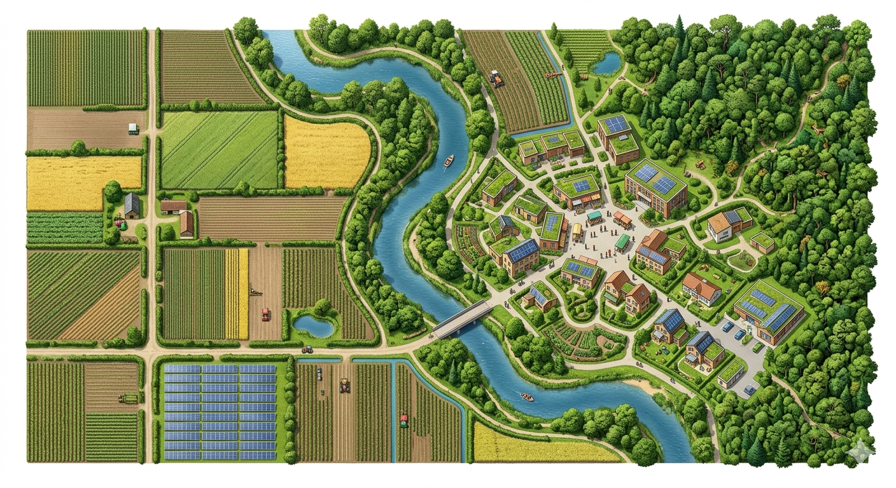
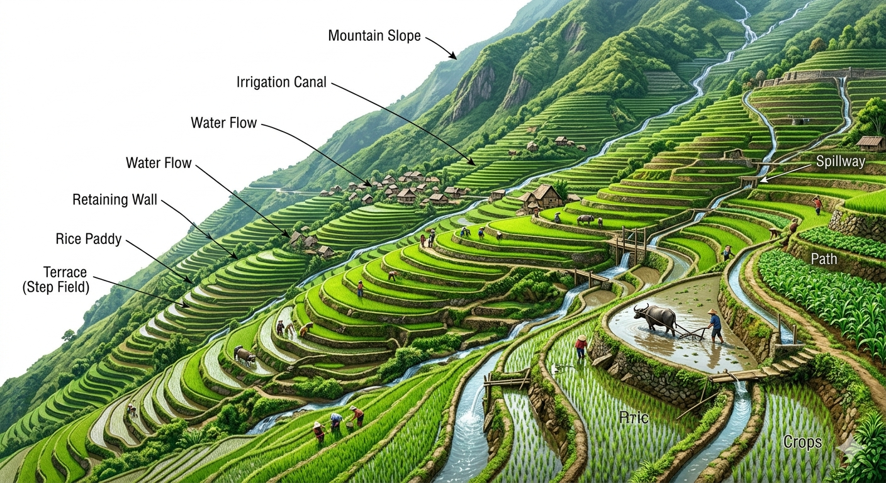
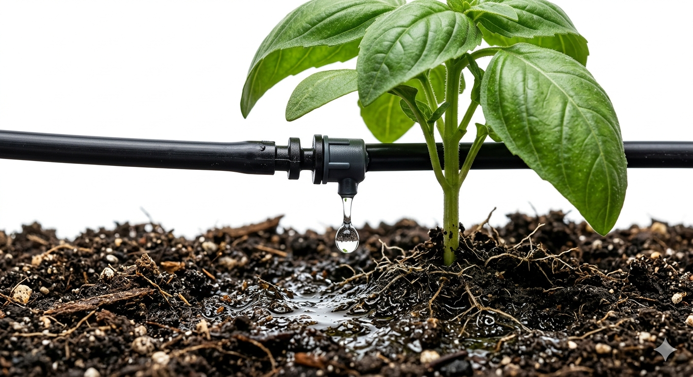

Earth is a unique planet in the solar system where life is possible due to the four spheres: lithosphere, atmosphere, hydrosphere, and biosphere. Earth's surface is divided into two parts: Land (about 30%) and Water (about 70%).
Land is the most important natural resource upon which all human activity is based, including growing crops, building houses, constructing roads, grazing animals, and mining.
Lithosphere: Consists of loose surface material called soil, which is a combination of organic matter (humus: dead/decomposed plants and animals) and inorganic matter (rock particles and minerals like lime and iron).
About 90% of the world's population is inhabited in the plain areas of alluvial soils (tropical and sub-tropical areas). In contrast, a sparse population is seen in high altitudes, deserts, and equatorial forests due to steep slopes, extreme temperatures, and thin soils.
The percentage of land used for various purposes (cultivation, building, grazing, etc.) varies globally. It is determined by the interplay of:

According to scientific norms, 33% area of the world should be under forest to maintain ecological balance. Currently, it is only 31.6% (93% natural, 7% man-made).
Note: Surinam has the maximum forest cover in the world, while India has the maximum arable land, followed by the USA and China.
Agricultural production is heavily dependent upon the fertility of the soil. Rich, deep soil favors high yields, whereas shallow, infertile soil leads to less production.
Soil formation is a slow and complex process influenced by five major factors:
Soil erosion (the removal of the top layer of soil by agents like water, wind, and unwise human actions like deforestation) severely damages fertility. Methods to conserve soil include:
Terrace farming: Growing crops on level steps or terraces constructed on hillsides.
Contour ploughing: Ploughing parallel to the contours of a hill slope rather than up and down, reducing water runoff.

Nearly 70% of the earth's surface is covered with water, making it a "watery planet". However, not all water is available for consumption.
About 97% of the earth's water is in oceans and seas (saline water). The remaining 3% is fresh water, distributed as follows:
The average annual precipitation of the world is estimated to be 1,050 millimetres per year (or 2.9 mm/day). The main source of fresh water is rainfall, which continuously recycles via the Hydrological cycle (evaporation, condensation, precipitation).
To utilize river water, dams are constructed across rivers. These projects serve multiple objectives simultaneously: irrigation, hydroelectricity generation, afforestation, flood control, and navigation.
Ecological Problems of Large Dams: Extensive forests get submerged under water, river water gets diverted, local populations get displaced, aquatic life is affected, and they can cause soil erosion.
With global warming and unpredictable rainfall, conservation is vital. Key methods include:
